1. CZŁOWIEK
Punktem wyjścia zawsze pozostaje ludzka wrażliwość, intuicja i świadoma decyzja artystyczna. AI nie zastępuje twórcy — rzuca wyzwanie jego autentyczności i redefiniuje pojęcie błędu oraz spontanicznej improwizacji.
Sztuka, Człowiek i Technologia. Przełamujemy granice między sceną a kodem. Całodniowa interdyscyplinarna konferencja, debaty z liderami mediów i kultury, pokazy technologiczne live oraz multimedialny koncert finałowy LIRAEL-9.
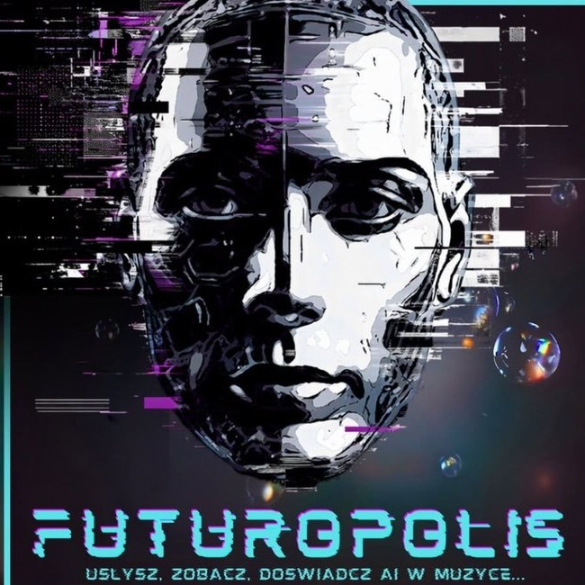
Odczarowujemy temat sztucznej inteligencji w muzyce. Odcinamy się od medialnych sensacji i powierzchownego generowania gotowych plików. Skupiamy się na realnych, artystycznych możliwościach i synergii człowieka z maszyną.
Punktem wyjścia zawsze pozostaje ludzka wrażliwość, intuicja i świadoma decyzja artystyczna. AI nie zastępuje twórcy — rzuca wyzwanie jego autentyczności i redefiniuje pojęcie błędu oraz spontanicznej improwizacji.
Systemy syntezy hybrydowej, sensory perkusyjne, przetwarzanie sygnału audio w czasie rzeczywistym i interakcja na scenie. Badamy inżynierię dźwięku z perspektywy praktyków z wieloletnim dorobkiem scenicznym i studyjnym.
Sztuczna inteligencja jako instrument i partner dialogu, a nie czarna skrzynka. Przyglądamy się modelom generatywnym Neutone, Suno, deep learningowi oraz prawnym realiom praw autorskich i tantiem w Europie.
Projekt FUTUROPOLIS powstał w 2023 roku z inicjatywy perkusisty, kompozytora i producenta Gniewomira Tomczyka. Początkowo był to eksperymentalny format łączący perkusję na żywo z elektroniką i algorytmami AI (m.in. w warszawskim klubie MOXO).
Z czasem idea przerodziła się w interdyscyplinarną platformę wymiany wiedzy goszczącą na Uniwersytecie Muzycznym Fryderyka Chopina (UMFC), w Akademiach Muzycznych w Poznaniu i Krakowie, Szkole Głównej Handlowej, Google Campus czy podczas HumanTech Summit.
Ważną osią artystyczną projektu pozostaje filozoficzna literatura Stanisława Lema — rozważania nad granicą świadomości, człowieczeństwa i technologii.
„Nie szukamy prostej odpowiedzi, czy AI to szansa czy zagrożenie. Tworzymy przestrzeń eksperymentu, w której przyszłość muzyki nie jest tylko przedmiotem teorii, lecz doświadczeniem na żywo.”
— Gniewomir Tomczyk, dyrektor artystyczny Futuropolis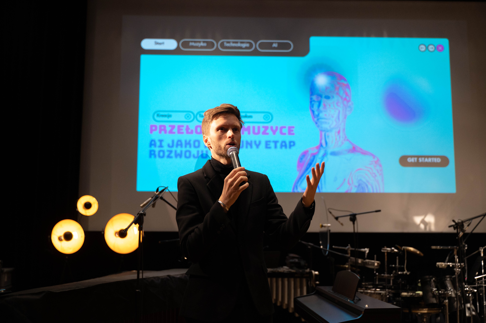
10:00 – 21:00 • Technologia → Narzędzia → AI-Assisted vs AI-Generated → Człowiek → Pokazy → Debaty → Koncert LIRAEL-9.
Spotkaj wybitne osobowości polskiej kultury, kompozytorów, inżynierów sztucznej inteligencji, dziennikarzy i prawników. Kliknij w kartę, aby poznać pełną biografię.
 Inicjator
Inicjator
Twórca Futuropolis łączący perkusję akustyczną i hybrydową ze sztuczną inteligencją w czasie rzeczywistym.
 Dźwięk & AI
Dźwięk & AI
Odpowiada za warstwę technologiczną, spójność brzmieniową i live-processing w widowisku Lirael-9.
 Kompozytor
Kompozytor
Autor ponad 200 partytur teatralnych i filmowych. Ikona polskiego teatru muzycznego i współzałożyciel Studia Buffo.
 Wokal & Jazz
Wokal & Jazz
Liderka Natalia Kordiak Quintet (nominacja do Fryderyka za album „Bajka”), traktująca ludzki głos jako pole do badań brzmieniowych.
 Basista
Basista
Eksploruje styki jazzu, funku i muzyki eksperymentalnej z wykorzystaniem nowoczesnych narzędzi hybrydowych.
 Deeptech
Deeptech
Przedsiębiorca z 30-letnim stażem, mentor startupów AI i ekspert międzynarodowego Cutter Consortium.
 PW / Apple ML
PW / Apple ML
Łączy badania nad sieciami neuronowymi audio z doświadczeniem ponad 600 zagranych koncertów na scenach muzycznych.
 Nowe Media
Nowe Media
Twórca instalacji audiowizualnych prezentowanych w Europie i Azji, laureat konkursów sztuki cyfrowej.
 SWPS
SWPS
Bada relacje człowiek–maszyna, creative coding i odpowiedzialne wdrażanie modeli generatywnych w projektowaniu.
 Prawo AI
Prawo AI
Doradza twórcom i instytucjom kultury w zakresie ochrony własności intelektualnej i licencjonowania danych treningowych.
 x-kom
x-kom
25 lat w branży IT, implementacje systemów agentowych i praktyczna dekonstrukcja algorytmów audio.
 0dB.pl
0dB.pl
Przez 25 lat kształtował wiedzę producentów dźwięku w Polsce. Autorytet w inżynierii audio i technologii studyjnej.
 Berlinale Winner
Berlinale Winner
Łączy klasyczny warsztat pianisty z syntezą modularną i najnowocześniejszymi wtyczkami sztucznej inteligencji.
 panGenerator
panGenerator
Twórca niezwykłych obiektów dźwiękowych, laureat Paszportu Polityki i wyróżnienia Ars Electronica.
 RDC & PSJ
RDC & PSJ
Głos polskiego jazzu i niestrudzony propagator muzyki improwizowanej w Polskim Radiu RDC.
 Koncert Finałowy
Koncert Finałowy
Solistka i kameralistka wirtuozowsko łącząca instrumenty sztabkowe z mistycznymi dźwiękami handpanu.
 Koncert Finałowy
Koncert Finałowy
Jeden z najbardziej dynamicznych polskich perkusistów młodego pokolenia występujący w Europie i USA.
 Choreografia
Choreografia
Specjalistka ekspresji scenicznej, łączy ruch ciała z improwizacją i generatywnymi projekcjami.
Kulminacyjny punkt IV edycji Futuropolis. Dziewięcioczęściowy dialog człowieka ze sztuczną inteligencją, łączący żywy puls perkusji akustycznej i elektronicznej z partiami marimb, wibrafonu, generatywnym wideo oraz ekspresją współczesnego tańca.
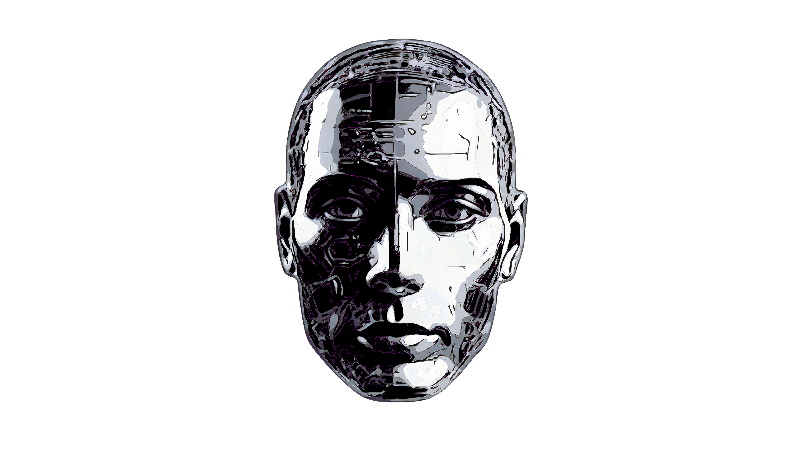
Zobacz kadry z poprzednich edycji na Uniwersytecie Muzycznym Fryderyka Chopina i w klubie MOXO. Połączenie pasji artystycznej, naukowych dyskusji i zachwytu publiczności.
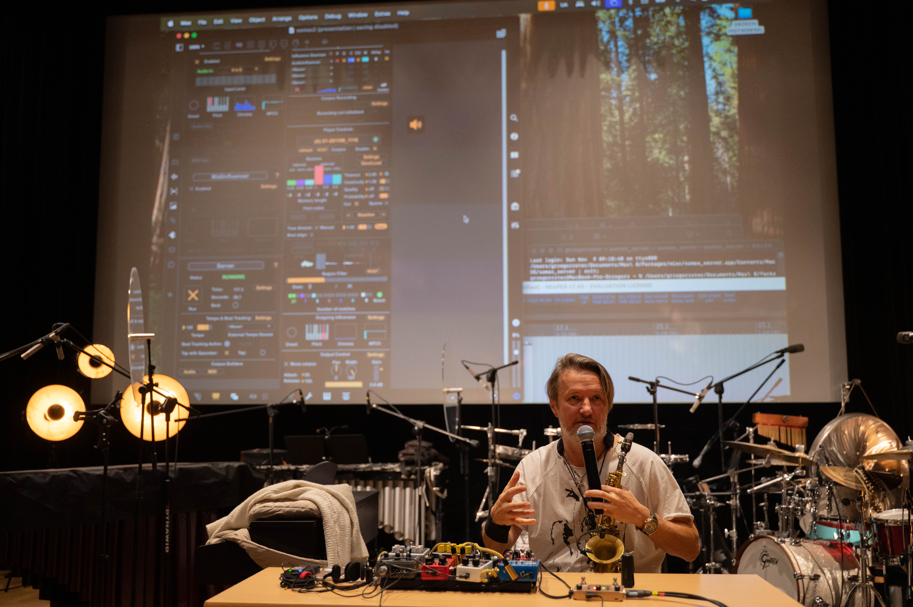
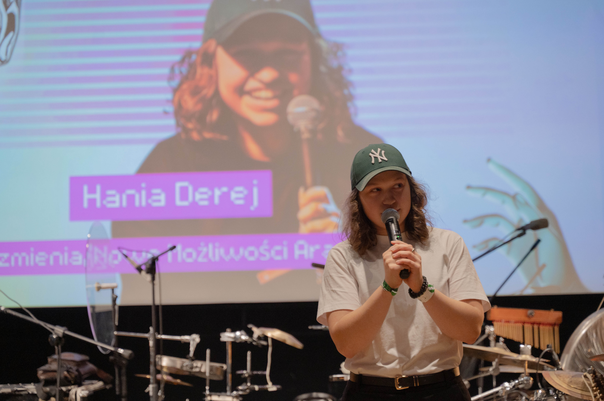
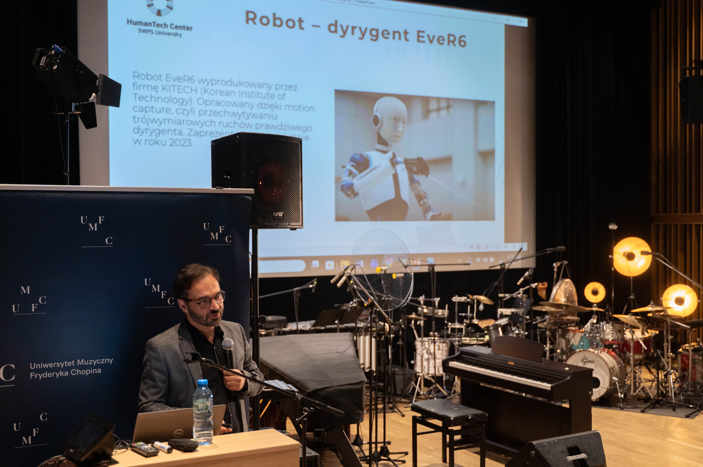
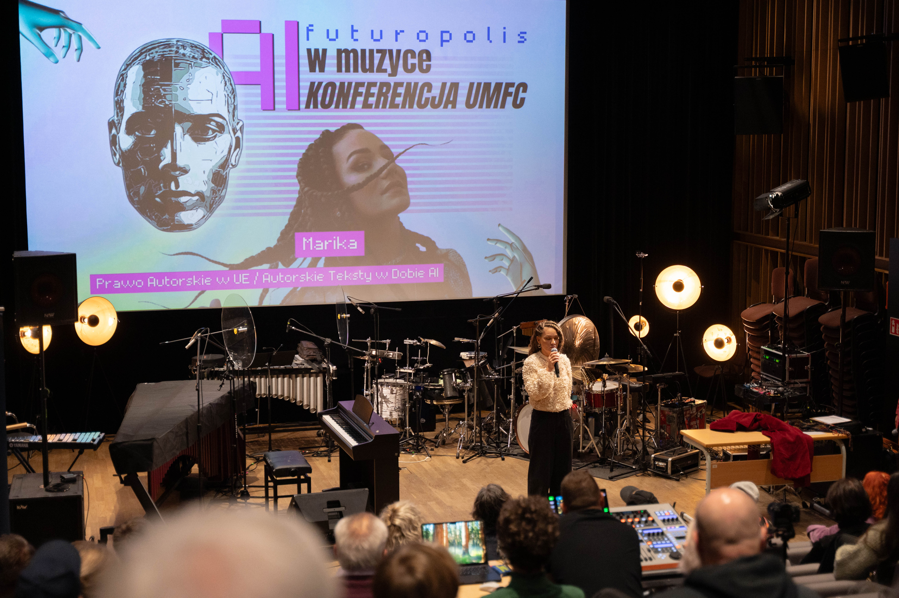
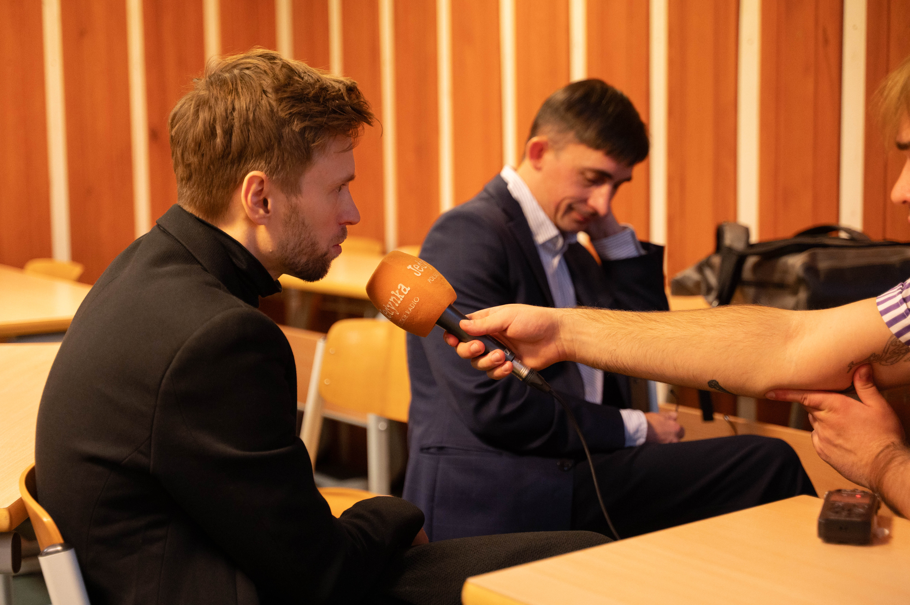
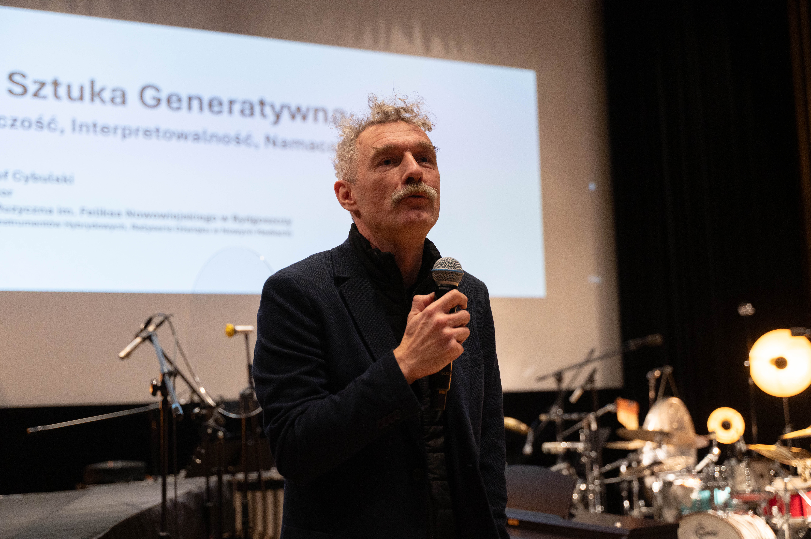
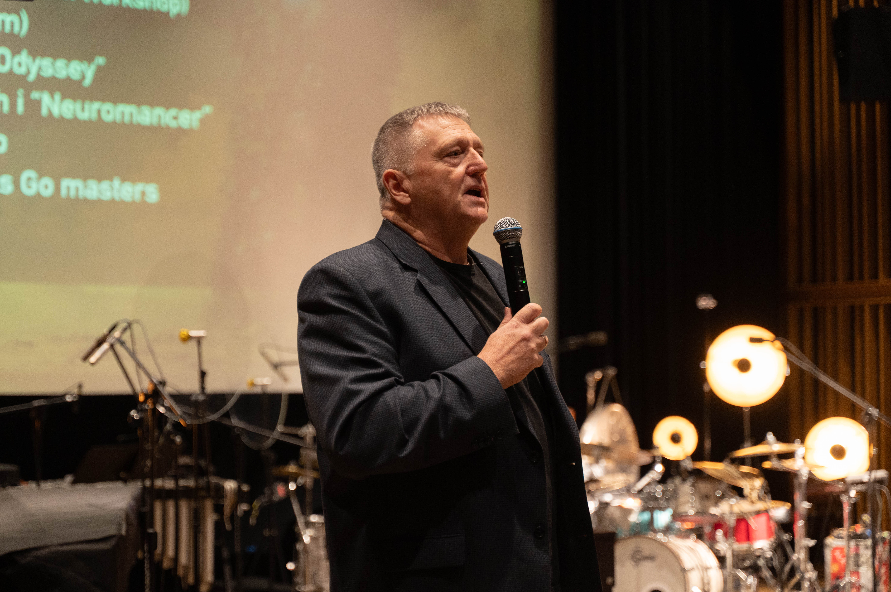
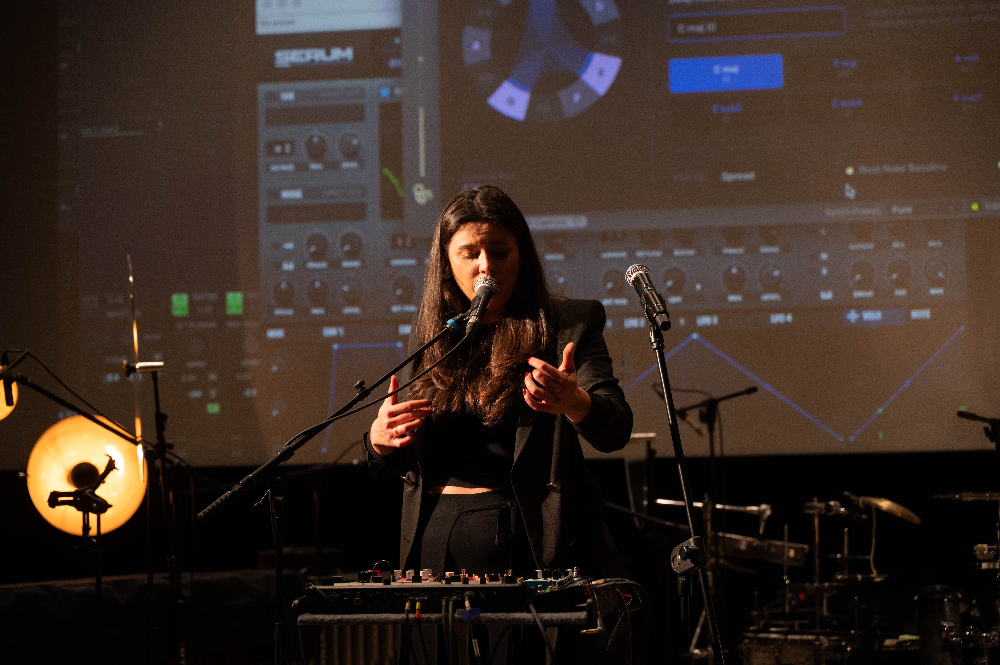
Bilety dostępne są za pośrednictwem oficjalnej platformy GoingApp. Zapewnij sobie miejsce na 11 godzin prelekcji, pokazów technologicznych i koncertu finałowego.
Dla studentów, doktorantów i uczniów z ważną legitymacją.
Pełny dostęp do całodniowego wydarzenia dla twórców i pasjonatów.
Dla profesjonalistów, firm i osób pragnących wesprzeć projekt.
Nowoczesny ośrodek kultury z doskonałą salą widowiskową i akustyką na warszawskim Mokotowie.
Szybki dojazd ze stacji Metro Służew lub Wilanowska (autobusy 189, 401, 136, 138). Przystanek: Rzymowskiego / Cybernetyki.
Dostępne bezpłatne miejsca postojowe wzdłuż ul. Rzymowskiego oraz parking podziemny w Galerii Mokotów (5 minut pieszo).
Obiekt w pełni przystosowany dla osób z niepełnosprawnościami (windy, podjazdy, pętla indukcyjna w sali widowiskowej).
Wszystko, co musisz wiedzieć o uczestnictwie, biletach i przygotowaniu do konferencji.
Konferencja ma charakter ściśle interdyscyplinarny. Zapraszamy muzyków, kompozytorów, producentów dźwięku, edukatorów, studentów kierunków artystycznych i technicznych, inżynierów AI, prawników, przedstawicieli mediów oraz wszystkich pasjonatów poszukujących rzetelnej wiedzy o wpływie sztucznej inteligencji na kulturę i sztukę.
Nie! Program został skomponowany tak, aby zrównoważyć głębokie spojrzenie technologiczne z praktyką sceniczną, wrażliwością artystyczną i refleksją kulturową. Każdy wykład i pokaz tłumaczony jest przystępnym, żywym językiem z perspektywy praktyka.
Tak! Każdy bilet konferencyjny (Studencki, Standard oraz VIP) upoważnia do wstępu na wszystkie 7 Aktów, w tym na wieczorny multimedialny koncert finałowy LIRAEL-9 o godzinie 20:00.
Konferencja odbywa się stacjonarnie w Domu Kultury KADR, co pozwala na pełne doświadczenie akustyki, instrumentów i bezpośredniego networkingu. Zapisy wideo i reportaże zostaną opublikowane po zakończeniu edycji na kanałach YouTube i stronie Futuropolis.
Chcesz zgłosić współpracę medialną, instytucjonalną lub zapytać o bilety grupowe? Napisz do nas bezpośrednio lub skorzystaj z szybkiego czatu WhatsApp.